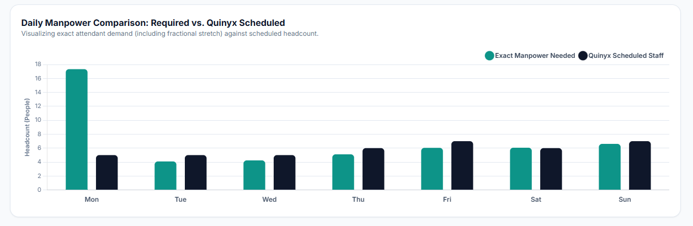
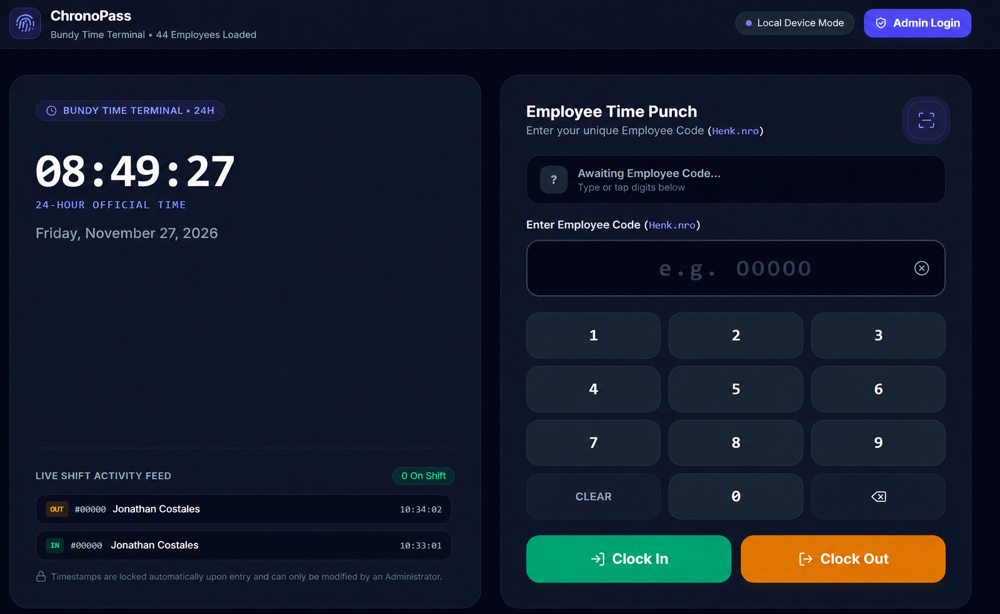

Ihmiset ensin
Selkeä viestintä, sovitut vastuut ja yhteinen käsitys tavoitteista.
Hotellialan esihenkilötyö · Suomi
Johdan hotellisiivoustiimiä ja vastaan päivittäisestä toiminnasta, palvelun laadusta ja huoneiden valmiudesta. Minulla on kuuden vuoden kokemus Suomen hotellialalta, ja sovitan työn painopisteet ja palvelun laatukriteerit yhteen N-Clean Oy:n ja Scandic-hotellien johdon kanssa.

Tietoa minusta
Haluan, että tiimini voi kääntyä puoleeni, luottaa tukeeni ja viihtyä yhdessä myös kiireisinä päivinä.
Asetan siivoustiimille selkeät painopisteet ja mukautan suunnitelmaa, kun hotellin kysyntä tai henkilöstön saatavuus muuttuu. Tunnistan toistuvat ongelmat laatutarkastusten ja asiakaspalautteen avulla ja kehitän ratkaisuja yhdessä tiimin kanssa.
Pyrin luomaan myönteisen ja energisen työilmapiirin, jossa on helppo pyytää apua tai ottaa huoli puheeksi. Kun huolehdin tiimistä ja annan sille tarvittavan tuen, työntekijät voivat olla ylpeitä työstään ja palvella vieraita paremmin.
Työni Scandicin hotelleissa Suomessa on antanut minulle käytännön kokemusta hotellisiivouksesta vaativassa toimintaympäristössä. Haluan jatkaa esihenkilötehtävissä, joissa laatu, yhteistyö ja jatkuva kehittäminen kuuluvat arkeen.
Rakennan sujuvaa ja järjestelmällistä hotellisiivousta, joka palvelee sekä vieraita että tiimiä.
Selkeä viestintä, sovitut vastuut ja yhteinen käsitys tavoitteista.
Tasainen siisteys, huoneiden valmius ja huolellisuus kaikissa asiakastiloissa.
Käytännön muutokset, jotka sujuvoittavat työtä ja auttavat ylläpitämään tasalaatuista palvelua.
Ydinosaaminen
Tiimin johtamista, toiminnan ohjausta, palvelun seurantaa ja prosessien kehittämistä.
Koordinoin tiimien työtä, tuen toimivaa viestintää, selkeytän vastuita ja järjestän päivittäisen työn niin, että painopisteet ovat selvät.
Ohjaan hotellisiivousta, ylläpidän huoneiden siisteysvaatimuksia, tuen laadunvalvontaa ja sovitan yhteen toiminnan painopisteet.
Selvitän vieraiden huolia yhdessä operatiivisen tiimin kanssa. Tilanteen mukaan hoidan asian itse tai autan työntekijää ratkaisemaan sen. Hyödynnän palautetta toistuvien siivousongelmien tunnistamisessa.
Arvioin työtapoja, tunnistan kehityskohteita ja otan käyttöön käytäntöjä, jotka parantavat työn tehokkuutta ja tasalaatuisuutta.
Muu osaaminen
Työkokemus
Johdan hotellisiivouksen päivittäistä toimintaa ja sovitan yhteen henkilöstöresurssit, huoneiden valmiuden ja palvelun laadun.
Keskeinen työkokemus
Hotellitoiminta · Suomi
Scandic Grand Centralissa mukautin miehitystä käyttöasteen ja henkilöstön saatavuuden mukaan, järjestelin päivittäisen työn uudelleen ja paransin kustannusseurantaa. Automatisoin myös rutiineja, jotta työnjohdolle jäi enemmän aikaa muihin tehtäviin. Hotellisiivouksen kannattavuus parani.
Kun käyttöaste nousi Marski by Scandicissa ja Scandic Grand Centralissa ennakoitua nopeammin, mukautin siivouksen miehitystä henkilöstön saatavuuden ja opiskelijoiden lukujärjestysten mukaan. Kun henkilöstöä riitti, järjestin apua muihin hotelleihin.
Verkkokaupan toiminnot
Esittelyssä
Näin autoin nostamaan siivouksen asiakastyytyväisyyden yli tavoitetason.
Marski by Scandic
Ensimmäisessä esihenkilötehtävässäni johdin hotellisiivousta Marski by Scandicissa.
Hotellisiivouksen tulos asiakastyytyväisyyskyselyssä jäi alle tavoitteen.
Hotellisiivouksen asiakastyytyväisyystulos nousi yli tavoitteen.
Toiminnan teemat
Kehittämäni työkalut
Kehitin työkalun, joka arvioi hotellisiivouksen päivittäisen henkilöstötarpeen huonejakauman ja työmäärän perusteella. Se vertaa tarvittavaa henkilöstömäärää Quinyxiin suunniteltuun miehitykseen, jotta voin havaita vajaukset ennen vuoron alkua.

Esimerkkidata: maanantaina tarvittavan ja suunnitellun miehityksen välinen ero on suurin.
Kehitin ChronoPassin, jotta työntekijät voivat kirjata työvuoronsa alun ja lopun työaikapäätteellä. Hallintaportaalissa esihenkilöt voivat hallita henkilöstöluetteloa, tarkistaa läsnäolotietoja, korjata työaikamerkintöjä ja viedä tietoja tiedostoon.

Havainnekuva, jossa näkyy esimerkkitunnus.
Johtamisperiaatteet
Neljä periaatetta, jotka ohjaavat tiimityötäni, laatutavoitteita ja päivittäistä toimintaa.
Toimiva hotellisiivous edellyttää selkeää viestintää, sovittuja vastuita ja yhteistä käsitystä tavoitteista.
Siisteys, huoneiden valmius ja huolellisuus ovat keskeisiä vieraskokemukselle.
Selkeät toimintatavat sujuvoittavat työtä, vähentävät virheitä ja auttavat ylläpitämään tasaista laatua.
Palaute, käytännön valmennus ja selkeät odotukset auttavat tiimiä tunnistamaan ongelmia ja parantamaan työtään.
Uratavoitteet
Olen avoin sekä hotellisiivouksen esihenkilötehtäville että laajemmille palvelu- tai operatiivisen johtamisen tehtäville. Haluan johtaa tiimejä, kehittää työn organisointia ja varmistaa tasalaatuisen palvelun.
Olen avoin sopiville työmahdollisuuksille Suomessa ja muualla Euroopassa.
Ota yhteyttäYhteystiedot
Voit ottaa minuun suoraan yhteyttä rekrytoinnista, yhteistyöstä tai ammatillisesta verkostoitumisesta.
Hyödylliset tiedot